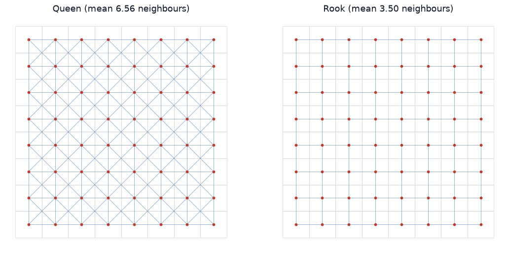

Building and comparing spatial weights matrices, contiguity, distance, kernel, and graph-based definitions. This notebook is Part 2, Spatial Autocorrelation (Chapter 2.2 of 6). The worked example uses diabetes_northeast.shp (217 counties); a synthetic 8×8 lattice (geolattice.spatial_statistics.datasets.load_lattice). The methods come from geolattice.spatial_statistics.weights.
Overview
Every statistic in this Part: Moran’s I, LISA, the hot-spot tests of Part 4, the spatial regression models of Part 3: starts from the same object: a spatial weights matrix\(W\), an \(n \times n\) matrix whose entry \(w_{ij}\) encodes how much region \(j\) counts as a “neighbour” of region \(i\). Nothing about \(W\) is handed to us by the data; every choice below (which counties touch, how many nearest neighbours, what distance counts as “close”) is an analyst decision, and Chapter 2.6 shows that the choice is not innocuous.
Step
What we do
Anatomy
Inspect the W object’s attributes: neighbors, weights, sparse, cardinalities, islands
Contiguity
Queen (shared edge or vertex) vs Rook (shared edge only)
Distance
KNN, DistanceBand, Kernel: and why KNN is not symmetric
Graph
Delaunay, Gabriel, RelativeNeighborhood: a strictly nested family
Correlograms
higher_order(w, k) for second-, third-, … order neighbours
Transforms
Row-standardised vs. binary vs. variance-stabilising weights
Islands
What a disconnected component means for every downstream statistic
Validation
Hand-compute a spatial lag on the 8×8 lattice and check it against W.lag
Preview
Six weight definitions, one variable, six different Moran’s I values
By the end, Chapter 2.3 can take any of these W objects and turn it into a Moran scatterplot.
Locate the repository root, import the spatial-statistics helpers, and point DATA at the example files.
Installation. This notebook needs installation option 3 (core, spatial analysis and spatial statistics): pip install "geolattice[statistics]". See “Installation options” in the GeoLattice README.
geolattice.spatial_statistics.weights.W wraps a sparse neighbour structure with a small, consistent API regardless of how it was built.
Code
w = Queen(counties)print(w)print()print(w.summary())
W(n=217, transform='row', nnz=1126, islands=1)
Spatial Weights (W)
===================
Observations 217
Transform row
Min neighbors 0
Mean neighbors 5.189
Max neighbors 10
Islands 1
Components 2
Nonzero weights 1126
.neighbors and .weights are dictionaries keyed by the original id (here, the GeoDataFrame index): neighbors[i] lists the ids of i’s neighbours, weights[i] the corresponding weights.
.id_order fixes the row/column order of the matrix form; .sparse is that matrix as a SciPy CSR array: everything downstream (Moran, Moran_Local, regression) works from this sparse form for speed.
.cardinalities(), neighbour counts per area; .islands(), ids with zero neighbours; .n_components(): connected components of the (undirected) neighbour graph; .is_symmetric(), whether \(w_{ij} = w_{ji}\) for all pairs (true for contiguity and graph weights, generally false for KNN).
Note that weights[0] already shows row-standardised values (each entry \(1/5\) for 5 neighbours): Queen defaults to transform="row". Section 8 covers what the transforms mean and why row-standardisation is the default.
Contiguity Weights: Queen and Rook
Queen contiguity links regions that share any part of their boundary: an edge or a single vertex. Rook contiguity requires a shared edge (a positive-length border); vertex-only (“corner”) touches do not count.
Code
wq = Queen(counties)wr = Rook(counties)same =all(set(wq.neighbors[i]) ==set(wr.neighbors[i]) for i in wq.id_order)print(f"Queen : mean neighbours {wq.cardinalities().mean():.3f}, nonzero links {wq.sparse.nnz}")print(f"Rook : mean neighbours {wr.cardinalities().mean():.3f}, nonzero links {wr.sparse.nnz}")print(f"identical neighbour sets on every county? {same}")diff_counties = [i for i in wq.id_order ifset(wq.neighbors[i]) !=set(wr.neighbors[i])]print(f"counties where Queen and Rook disagree: {len(diff_counties)} of {len(wq.id_order)}")
Queen : mean neighbours 5.189, nonzero links 1126
Rook : mean neighbours 5.152, nonzero links 1118
identical neighbour sets on every county? False
counties where Queen and Rook disagree: 8 of 217
Same idea, different graphs: lattice vs. irregular counties
On the Northeast counties, Queen and Rook are nearly identical (a handful of corner-only touches). On a regular square lattice, the difference is structural: every interior cell has 4 edge-neighbours under Rook but 8 neighbours (edges and diagonals) under Queen: exactly double.
Code
wq_lat = Queen(lattice)wr_lat = Rook(lattice)print(f"Lattice (8x8): Queen mean neighbours = {wq_lat.cardinalities().mean():.3f} "f"(interior cells get 8: N,S,E,W + 4 diagonals)")print(f"Lattice (8x8): Rook mean neighbours = {wr_lat.cardinalities().mean():.3f} "f"(interior cells get 4: N,S,E,W only)")fig, axes = plt.subplots(1, 2, figsize=(11, 5.2))for ax, w, title in [(axes[0], wq_lat, "Queen"), (axes[1], wr_lat, "Rook")]: lattice.plot(ax=ax, facecolor="none", edgecolor="lightgrey", linewidth=0.5) cx = lattice.geometry.centroid.x.to_numpy() cy = lattice.geometry.centroid.y.to_numpy()for i in w.id_order:for j in w.neighbors[i]:if j > i: ax.plot([cx[i], cx[j]], [cy[i], cy[j]], color=C["blue"], lw=0.6, alpha=0.6) ax.scatter(cx, cy, s=10, color=C["red"], zorder=3) ax.set_title(f"{title} (mean {w.cardinalities().mean():.2f} neighbours)") ax.set_axis_off()plt.tight_layout()plt.show()
Lattice (8x8): Queen mean neighbours = 6.562 (interior cells get 8: N,S,E,W + 4 diagonals)
Lattice (8x8): Rook mean neighbours = 3.500 (interior cells get 4: N,S,E,W only)

The gap between “similar on irregular counties, very different on a regular grid” is not a coincidence: on a lattice, diagonal vertex touches are as numerous and as regular as edge touches, so including them (Queen) doubles the neighbour count in a structured way. On irregular county polygons, corner-only touches are rare geometric accidents, so the two definitions mostly agree.
Distance-based Weights: KNN, DistanceBand, Kernel
K-nearest neighbours: an asymmetric relation
KNN(k) links each region to its k nearest neighbours by centroid distance. Because “is one of my \(k\) nearest” is not a symmetric relation (county \(A\) can be among \(B\)’s 4 nearest without \(B\) being among \(A\)’s 4 nearest, if \(A\) sits in a locally sparse area), the resulting W is not symmetric.
Code
for k in (4, 6, 8): wk = KNN(counties, k=k) directed_pairs =sum(len(v) for v in wk.neighbors.values()) asym_pairs =sum(1for i in wk.id_order for j in wk.neighbors[i] if i notin wk.neighbors[j])print(f"KNN(k={k}): is_symmetric={wk.is_symmetric()}, "f"{asym_pairs} of {directed_pairs} directed links are one-way ({asym_pairs/directed_pairs:.1%})")
KNN(k=4): is_symmetric=False, 164 of 868 directed links are one-way (18.9%)
KNN(k=6): is_symmetric=False, 226 of 1302 directed links are one-way (17.4%)
KNN(k=8): is_symmetric=False, 286 of 1736 directed links are one-way (16.5%)
Distance band: the smallest island-free threshold
DistanceBand(threshold) links every pair of regions within threshold distance (in the units of the CRS, metres here, since diabetes_northeast uses the equal-area EPSG:5070). Too small a threshold creates islands; too large a threshold makes every county a neighbour of nearly every other. We search for the smallest threshold that leaves zero islands.
# Bisect for the exact smallest island-free threshold (metres)lo, hi =95_000, 100_000while hi - lo >100: mid = (lo + hi) //2iflen(DistanceBand(counties, threshold=mid).islands()) ==0: hi = midelse: lo = midw_band = DistanceBand(counties, threshold=hi)print(f"smallest island-free threshold: {hi:,} m ({hi/1000:.1f} km)")print(f"mean neighbours at that threshold: {w_band.cardinalities().mean():.2f} "f"(max {w_band.cardinalities().max()}): nearly triple Queen's mean of 5.2")
smallest island-free threshold: 99,218 m (99.2 km)
mean neighbours at that threshold: 14.49 (max 32): nearly triple Queen's mean of 5.2
An island-free DistanceBand here needs almost 100 km, and even then the mean county has 14-15 neighbours
far denser than Queen’s 5.2. This is the generic trade-off with distance-band weights: eliminating islands means accepting a much larger, less locally-focused neighbourhood everywhere else, because one geographically isolated county (Section 9) sets the threshold for the whole map.
Kernel weights
Kernel assigns a continuously decaying weight (Gaussian, triangular, or bisquare) rather than a binary in/out: every region has some weight to every other, shrinking with distance. A fixed bandwidth uses one distance for all regions; an adaptive bandwidth (fixed=False, k=...) uses the distance to each region’s own \(k\)-th neighbour, so bandwidths widen automatically in sparse areas. This foreshadows Part 6 (geographically weighted models), where the same kernel functions define a local rather than a global estimator.
fixed bisquare (h=80km): mean nonzero-weight neighbours = 9.81
adaptive bisquare (k=8): mean nonzero-weight neighbours = 7.00
Coordinates for distance-based weights: representative point vs. centroid
Every distance-based weight (KNN, DistanceBand, Kernel) needs one coordinate pair per polygon. This library uses representative_point() (a point guaranteed to fall inside the polygon), not the geometric centroid (which can fall outside an oddly shaped or multi-part polygon: for instance a coastal county whose centroid lands in open water). The two rarely coincide exactly.
Code
from geolattice.spatial_statistics.core.distance import coords_from_geometryrep_pts = coords_from_geometry(counties)centroids = np.c_[counties.geometry.centroid.x, counties.geometry.centroid.y]offsets_km = np.linalg.norm(rep_pts - centroids, axis=1) /1000print(f"representative point vs. centroid offset: mean {offsets_km.mean():.2f} km, max {offsets_km.max():.2f} km")worst = np.argsort(offsets_km)[::-1][:3]counties.iloc[worst][["FIPS", "STATE", "COUNTY"]].assign(offset_km=offsets_km[worst].round(2))
representative point vs. centroid offset: mean 3.63 km, max 32.81 km
Three definitions build a neighbour graph directly from point geometry, independent of any polygon boundaries, and form a strictly nested family: every Relative Neighbourhood Graph (RNG) edge is a Gabriel graph edge, and every Gabriel edge is a Delaunay edge.
Delaunay triangulation: the maximal planar graph with no point inside any triangle’s circumcircle, always connected, no islands possible.
Gabriel graph: a Delaunay edge \((i,j)\) survives only if the circle with diameter \(\overline{ij}\) contains no other point: a strictly sparser subgraph.
Relative Neighbourhood Graph: an edge \((i,j)\) survives only if no third point is closer to both\(i\) and \(j\) than they are to each other: sparser still.
gab_edges = {(min(i, w_gab.id_to_index[j]), max(i, w_gab.id_to_index[j]))for i inrange(w_gab.n) for j in w_gab.neighbors[w_gab.id_order[i]]}del_edges = {(min(i, w_del.id_to_index[j]), max(i, w_del.id_to_index[j]))for i inrange(w_del.n) for j in w_del.neighbors[w_del.id_order[i]]}rng_edges = {(min(i, w_rng.id_to_index[j]), max(i, w_rng.id_to_index[j]))for i inrange(w_rng.n) for j in w_rng.neighbors[w_rng.id_order[i]]}print(f"RNG subset of Gabriel? {rng_edges <= gab_edges}")print(f"Gabriel subset of Delaunay? {gab_edges <= del_edges}")
RNG subset of Gabriel? True
Gabriel subset of Delaunay? True
The edge counts fall in strictly decreasing order (Delaunay > Gabriel > RNG) and the subset checks confirm the nesting exactly. Unlike DistanceBand, none of the three graph-based definitions produces an island by construction: every point has some nearest geometric relationship, which makes them a useful island-free alternative to contiguity weights when a polygon-adjacency graph is disconnected (Section 9).
Higher-order Neighbours and Correlograms
higher_order(w, k) builds the \(k\)-th order neighbour graph: for \(k=2\), the neighbours of your neighbours (excluding first-order neighbours and self). Chaining Moran’s I over increasing \(k\) gives a spatial correlogram: how quickly does similarity decay with the number of contiguity “steps”?
Code
w1 = Queen(counties)rows = []for k inrange(1, 6): wk = w1 if k ==1else higher_order(w1, k=k) m = Moran(counties["Dia_pct"], wk, permutations=999, seed=1) rows.append({"order_k": k, "mean_neighbours": wk.cardinalities().mean(), "Moran_I": m.I, "p_sim": m["p_sim"]})correlogram = pd.DataFrame(rows)correlogram
Autocorrelation is strongest at first order and decays toward zero as \(k\) grows: consistent with a smoothly varying regional process rather than long-range structure. higher_order on the Northeast counties (unlike a distance-band or KNN graph) is well-defined even across the Nantucket island’s own disconnection, since higher_order never has to reach across a component boundary that does not exist in the first-order graph.
Transformations
W.transform(conversion) restandardises weights in place; the interpretation of every downstream statistic depends on which one is active.
Transform
Effect
Typical use
'binary'
\(w_{ij} = 1\) for every neighbour
ICAR models (Part 5) need 0/1 adjacency
'row' (default for contiguity/KNN)
\(w_{ij} = 1 / \lvert N_i\rvert\), rows sum to 1
Moran’s I as a weighted average of neighbour values; the standard choice
'variance'
\(w_{ij} = w_{ij} / \sqrt{\sum_j w_{ij}}\)
Variance-stabilising; less common, seen in some regression contexts
Row-standardisation is the default because it turns the spatial lag \(Wz\) into an interpretable average of a region’s neighbours, and it is what makes Moran’s I’s regression-slope interpretation (Chapter 2.3) hold. Its cost: row-standardised weights are not symmetric even when the underlying adjacency is (each row is scaled by its own neighbour count), which matters for some estimators in Part 3.
Nantucket County, MA, an actual island with no land border to any other county, has zero Queen (or Rook) neighbours by construction. This is not a data error to fix; it is a genuine topological fact that spatial weights inherit directly from geography, and analysis has to make an explicit decision about it. Three options:
Code
from geolattice.spatial_statistics.weights import KNNi = island_idx[0]# Option A: drop the island entirely (row deleted, n reduced by one): not shown here, just noted.# Option B: KNN fallback for the island only: replace its (empty) contiguity row with its nearest neighbour(s)wk1 = KNN(counties, k=1)fallback_id = wk1.neighbors[i][0]print("Option B (KNN fallback): nearest county to Nantucket by representative point =", counties.loc[fallback_id, "COUNTY"])# Option C: manual link by centroid distance to the nearest other island (Dukes County / Martha's Vineyard)coords = np.c_[counties.geometry.centroid.x, counties.geometry.centroid.y]d = np.linalg.norm(coords - coords[i], axis=1)d[i] = np.infmanual_target = np.argmin(d)print("Option C (manual link, by centroid): nearest county overall =", counties.iloc[manual_target]["COUNTY"], f"({d[manual_target]/1000:.1f} km)")
Option B (KNN fallback): nearest county to Nantucket by representative point = Barnstable County
Option C (manual link, by centroid): nearest county overall = Dukes County (49.8 km)
Options B and C do not agree (representative_point nearness picks the Cape Cod mainland, centroid nearness picks Dukes County / Martha’s Vineyard, itself another island): a small illustration of Section 5.4’s point that coordinate choice is not cosmetic. Whichever fix is applied, every downstream statistic that depends on w.n_components() being 1, several regression estimators in Part 3, the ICAR structure of Part 5, is affected, and the fix should be documented, not silently absorbed. Chapters 2.4-2.6 leave the island in place (row-standardisation already handles it gracefully: Moran, Moran_Local, and friends give it NaN/0 contributions rather than crashing) and simply report n=217, islands=1 alongside every result.
Spatial Lag by Hand
The spatial lag\(Wz\) of a mean-centred attribute \(z = y - \bar y\) is the building block of every statistic in Chapters 2.4-2.5. On the 8×8 lattice, we compute it two ways: a direct loop over w.neighbors, and the library’s w.lag(): and confirm they agree to floating-point precision.
Code
w_lat = Rook(lattice)z = lattice[zcol].to_numpy()lag_by_hand = np.zeros(len(z))for idx in lattice.index: nbrs = w_lat.neighbors[idx]if nbrs: lag_by_hand[idx] = np.mean([z[w_lat.id_to_index[j]] for j in nbrs]) # row-standardised: mean of neighbourslag_builtin = w_lat.lag(z)max_diff = np.max(np.abs(lag_by_hand - lag_builtin))print(f"z[:5] = {z[:5].round(4)}")print(f"lag by hand[:5] = {lag_by_hand[:5].round(4)}")print(f"W.lag()[:5] = {lag_builtin[:5].round(4)}")print(f"max |difference| over all 64 cells: {max_diff:.2e}")
z[:5] = [1.3443 1.8081 2.0399 1.338 0.3805]
lag by hand[:5] = [1.1812 1.437 1.4219 1.066 0.2497]
W.lag()[:5] = [1.1812 1.437 1.4219 1.066 0.2497]
max |difference| over all 64 cells: 2.22e-16
Exact agreement (to machine precision), as expected: W.lag(z) for row-standardised weights is the vector of neighbourhood means, computed with a sparse matrix-vector product instead of an explicit Python loop.
Interoperability with libpysal
W.to_libpysal() / W.from_libpysal() (requires the [libpysal] extra) convert to and from the PySAL ecosystem’s own weights class, so results can be cross-checked against the reference implementation (used again in Chapter 2.6’s exercises) or fed into PySAL tools this package does not implement.
Code
try: lw = wq.to_libpysal()print(f"converted: libpysal W with n={lw.n}, mean neighbours={lw.mean_neighbors:.3f}") w_back =type(wq).__mro__[0].__bases__ # placeholder, not usedfrom geolattice.spatial_statistics.weights import W as SSW w_roundtrip = SSW.from_libpysal(lw) same_nbrs =all(set(wq.neighbors[i]) ==set(w_roundtrip.neighbors[i]) for i in wq.id_order)print(f"round-tripped back to geolattice.spatial_statistics.W: neighbour sets identical = {same_nbrs}")exceptImportErroras e:print(f"libpysal not installed: {e}")
converted: libpysal W with n=217, mean neighbours=5.189
round-tripped back to geolattice.spatial_statistics.W: neighbour sets identical = True
A Sensitivity Preview: Six Weight Definitions, One Variable
Everything above was about the mechanics of W. Does the choice of W actually change a substantive conclusion? A first look, with Chapter 2.6 returning to it properly (including permutation and FDR sensitivity):
Code
band_thr =100_000# ~100 km, from Section 5.2weight_defs = {"Queen": Queen(counties),"Rook": Rook(counties),"KNN(6)": KNN(counties, k=6),f"DistanceBand({band_thr//1000}km)": DistanceBand(counties, threshold=band_thr, binary=True),"Delaunay": Delaunay(counties),"Gabriel": Gabriel(counties),}rows = []for name, w in weight_defs.items(): m = Moran(counties["Dia_pct"], w, permutations=999, seed=1) rows.append({"weights": name, "mean_neighbours": round(w.cardinalities().mean(), 2),"islands": len(w.islands()), "Moran_I": round(m.I, 4), "p_sim": m["p_sim"]})sensitivity = pd.DataFrame(rows).sort_values("Moran_I", ascending=False).reset_index(drop=True)sensitivity
weights
mean_neighbours
islands
Moran_I
p_sim
0
Gabriel
4.50
0
0.2729
0.001
1
Delaunay
5.87
0
0.2481
0.001
2
Rook
5.15
1
0.2398
0.001
3
Queen
5.19
1
0.2398
0.001
4
KNN(6)
6.00
0
0.2316
0.001
5
DistanceBand(100km)
14.61
0
0.1161
0.001
Every definition agrees on the qualitative conclusion: positive, strongly significant autocorrelation (\(p_\text{sim} = 0.001\), the floor for 999 permutations, throughout). But the magnitude varies by more than double, from Gabriel’s 0.273 down to the dense distance-band’s 0.116: denser weight matrices (more neighbours per region) systematically pull Moran’s I toward zero, because averaging over a wider, less locally-specific neighbourhood dilutes genuine local similarity with more distant, less related counties. A reported Moran’s I is only interpretable together with the weights definition that produced it.
Summary and Conclusions
This chapter built and compared every spatial weights definition used in the rest of Part 2.
What we did
Inspected the anatomy of a W object: neighbors, weights, sparse, cardinalities, islands, n_components, is_symmetric, summary().
Compared Queen and Rook contiguity: nearly identical on irregular counties, structurally different (8 vs. 4 neighbours per interior cell) on a regular lattice.
Built distance-based weights (KNN, DistanceBand, Kernel) and found the smallest island-free DistanceBand threshold (≈99 km, mean 14.6 neighbours): far denser than contiguity weights.
Confirmed KNN’s directed, asymmetric neighbour relation, and the difference between representative_point and centroid coordinates that every distance-based weight relies on.
Built the strictly nested Delaunay ⊇ Gabriel ⊇ Relative-Neighbourhood graph family and verified the nesting directly on the edge sets.
Computed a spatial correlogram with higher_order, showing autocorrelation decaying with neighbour order.
Distinguished the 'row', 'binary', and 'variance' transforms and what each is used for downstream.
Identified Nantucket County as the Northeast graph’s one true island, and compared three ways of handling it.
Hand-computed a spatial lag on the 8×8 lattice and matched W.lag() to machine precision.
Converted to and from libpysal for cross-checking, and previewed how much Moran’s I moves across six weight definitions on the same variable.
Practical takeaways
There is no single “correct” W; every definition is a modelling choice with consequences for every downstream number (Section 12 quantifies this directly).
Islands are not always errors, some are geography (Nantucket), but every downstream method needs an explicit, documented decision about how to handle them.
Row-standardisation is the practical default, but it breaks symmetry; know which estimators in Part 3 require a symmetric W instead.
Next steps
Chapter 2.3 (Visualisation and Exploratory Analysis) takes the Queen W built here and turns it into a choropleth, a Moran scatterplot, and a first visual read of where the clustering in Dia_pct sits.
Further reading
Textbooks
Reference
Notes
Anselin, L. (1988). Spatial Econometrics: Methods and Models. Kluwer Academic.
Chapter 3 remains the standard reference on spatial weights construction
Getis, A. & Aldstadt, J. (2004). Constructing the spatial weights matrix using a local statistic. Geographical Analysis, 36, 90-104.
Data-driven approaches to choosing weights, beyond fixed rules
Griffith, D. A. (1996). Some guidelines for specifying the geographic weights matrix contained in spatial statistical models. In Practical Handbook of Spatial Statistics.
Practical guidance on weights choice and its consequences
Key papers
Paper
Contribution
Cliff, A. D. & Ord, J. K. (1973). Spatial Autocorrelation. Pion.
Early systematic treatment of contiguity-based weights
Matula, D. W. & Sokal, R. R. (1980). Properties of Gabriel graphs relevant to geographic variation research. Geographical Analysis, 12, 205-222.
The Gabriel graph, applied to spatial data
Toussaint, G. T. (1980). The relative neighbourhood graph of a finite planar set. Pattern Recognition, 12, 261-268.
Origin of the Relative Neighbourhood Graph
In this library
Object
Role
geolattice.spatial_statistics.weights.W
The weights container: summary(), cardinalities(), islands(), n_components(), lag(), transform(), to_libpysal()/from_libpysal()
Queen, Rook
Polygon contiguity weights
KNN, DistanceBand, Kernel
Distance-based weights
Delaunay, Gabriel, RelativeNeighborhood
Nested graph-based weights
higher_order(w, k)
k-th order neighbours, for correlograms
Chapter 2.4-2.5
esda.Moran, esda.Moran_Local consume any W built here
Part 3
Spatial regression, where the choice of W and its transform directly enters the likelihood